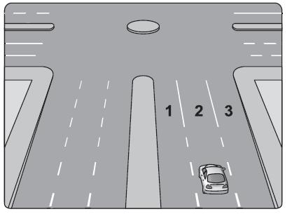
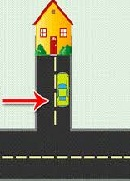
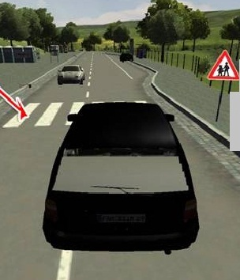
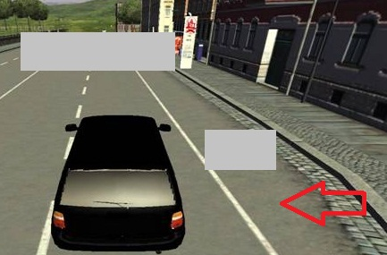
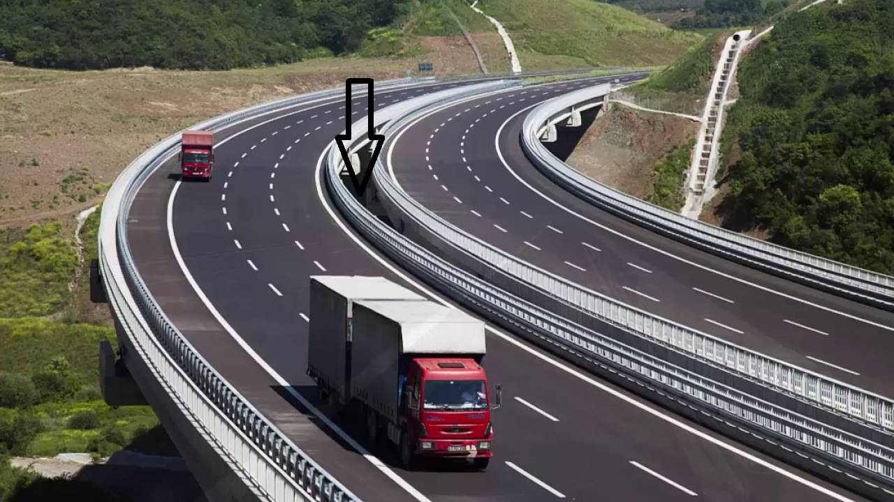
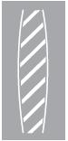
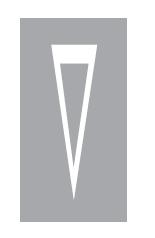
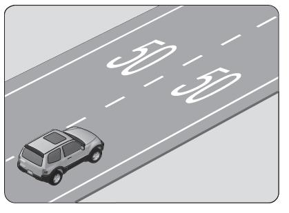

انتهى الامتحان النتيجة أقل من 70 يجب حضور كل المحاضرات لنضمن لكم النجاح
الترافيك وقواعد المرور
| معلومات المستخدم | ||
|---|---|---|
| الاسم | محمد السبعاوي | |
| رقم TC | 99774452894 | |
| علامتي | 0 | |
| علامة كل سؤال | 2 | |
| العلامة الكلية | 100 | |
| عدد الاسئلة | 50 | |
| # | السؤال | ||||||||
|---|---|---|---|---|---|---|---|---|---|
| 1 | ماذا يقصد الشرطي بالحركة التالية؟ 
| ||||||||
| 2 | ماذا يقصد الشرطي بالحركة التالية؟ .jpg)
| ||||||||
| 3 | ماذا يقصد الشرطي بالحركة التالية؟ .jpg)
| ||||||||
| 4 | ماذا يقصد الشرطي بالحركة التالية؟ .jpg)
| ||||||||
| 5 | ماذا يقصد الشرطي بالحركة التالية؟ .jpg)
| ||||||||
| 6 | ممايلي ليس من المركبات التي لها أولوية مرور؟
| ||||||||
| 7 | حدد الطريق المقسوم من الطرق الظاهرة بالصور التالية؟
| ||||||||
| 8 | مسافة الإنعطاف ومسافة التجاوز مسافة تبديل الشريط قبل التقاطعات مسافة وضع المثلت التحذيري إن المسافات المذكورة أعلاه محددة بأرقام معينة داخل وخارج المدينة وفقاً لذلك ماهي الأرقام الصحيحة؟
| ||||||||
| 9 | تُعبر الأرقام 30 متر - 150 متر عن مسافات محددة داخل وخارج المدينة ممايلي خاطئ ولايتقيد بالأبعاد السابقة؟
| ||||||||
| 10 | تُعبر الأرقام 15 متر - 100 متر عن مسافات محددة داخل وخارج المدينة ممايلي صحيح ويتقيد بالأبعاد السابقة؟
| ||||||||
| 11 | يحق للمركبة تبديل الشريط داخل وخارج المدينة وذلك قبل التقاطع بــ..... متر إملأ الفراغ المناسب بالأرقام المناسبة؟ 
| ||||||||
| 12 | إذا قرر السائق الدوران حول الدواّر كما الصورة المرفقة أي شريط يتوجب عليه أن يسلك؟ 
| ||||||||
| 13 | إذا قرر السائق الإنعطاف نحو اليمين كما الصورة المرفقة أي شريط يتوجب عليه أن يسلك؟ 
| ||||||||
| 14 | ممايلي يعتبر خاطئ عندما يقوم السائق بالإنعطاف؟
| ||||||||
| 15 | عندما تصبح الإشارة الضوئية حمراء أو عندما يحدث عطل ما في المركبة سيقوم السائق بإجراء صحيح من الإجراءات التالية ماذا يسمى هذا الإجراء؟
| ||||||||
| 16 | إن قيام الشوفير بإنزال الركاب من المركبة خلال مدة زمنية لاتتجاوز 5 دقائق يسمى ذلك؟
| ||||||||
| 17 | الإجراء الذي لا يُفرض على الشوفير أو السائق ويكون برضاه ولايتجاوز المدة 5 دقائق يسمى؟
| ||||||||
| 18 | ماذا تعني الشاخصة المرورية التالية؟ .png)
| ||||||||
| 19 | ماذا تعني الشاخصة المرورية التالية؟ 
| ||||||||
| 20 | يمنع الركن أو التوقف على الجسور والتقاطعات وفي الأنفاق وعلى ممرات المشاة و أمام أبواب دوائر الدولة ومواقف خدمة الشعب ويحق للسائق الركن أو التوقف بعيدً عنها وعلى مسافة داخل المدينة..... خارج المدينة......إملأ الفراغات بالأرقام المناسبة؟
| ||||||||
| 21 | كم هي مسافة الركن الواجب تركها بعيدً عن موقف خدمة الشعب الموضح في الصورة؟ .jpg)
| ||||||||
| 22 | عند ركن المركبة في منحدر نزول ممايلي يعتبر تصرف خاطئ إذا قام السائق بفعله؟
| ||||||||
| 23 | وزن طفاية الحريق الواحدة في سيارة المواد الخطرة هو ..... كغ؟
| ||||||||
| 24 | في سيارات المواد الخطرة هناك شيء ضروريً يجب تواجده مع الشوفير فما هو؟
| ||||||||
| 25 | في الصورة المرفقة أي شريط يمنع إشغاله بشكل دائم ومستمر ؟ .png)
| ||||||||
| 26 | حدد الطريق المقسوم من الطرق الظاهرة بالصور التالية؟
| ||||||||
| 27 | ماذا يسمى الجزء المشار له بالسهم في الصورة المرفقة؟ 
| ||||||||
| 28 | إذا كانت الخطوط المتقطعة منتصف الطريق قصيرة هذا يعني أن نوع الطريق؟
| ||||||||
| 29 | إذا كانت الخطوط المتقطعة منتصف الطريق طويلة هذا يعني أن نوع الطريق؟
| ||||||||
| 30 | ماذا يسمى الجزء 1 - 4 من الطريق الموضح في الصورة؟ 
| ||||||||
| 31 | ماذا يسمى الجزء من الطريق المشار له بالسهم في الصورة المرفقة؟ 
| ||||||||
| 32 | ماذا يسمى الطريق التي تخرج منه المركبة 2 من محطة الوقود في الصورة المرفقة؟ .jpg)
| ||||||||
| 33 | ماذا يسمى الجزء من الطريق المشار له بالسهم في الصورة المرفقة؟ 
| ||||||||
| 34 | ماذا يسمى الجزء من الطريق المشار له بالسهم في الصورة المرفقة؟ 
| ||||||||
| 35 | ماذا يسمى الجزء من الطريق المشار له بالسهم في الصورة المرفقة؟ 
| ||||||||
| 36 | ماذا يسمى الجزء من الطريق المشار له بالسهم في الصورة المرفقة؟ 
| ||||||||
| 37 | ماذا يسمى الجزء من الطريق المشار له بالسهم في الصورة المرفقة؟  __.jpg)
| ||||||||
| 38 | ماذا يسمى الجزء من الطريق المرصود بكاميرات المراقبة في الصورة المرفقة؟ 
| ||||||||
| 39 | ماذا يسمى الطريق الموضح في الصورة المرفقة؟ 
| ||||||||
| 40 | ماذا يسمى الجزء من الطريق المشار له بالسهم في الصورة المرفقة؟ 
| ||||||||
| 41 | في الصورة المرفقة أيهما ممر المشاة؟ .png)
| ||||||||
| 42 | حدد الطريق المقسوم من الطرق الظاهرة بالصور التالية؟
| ||||||||
| 43 | في الصورة المرفقة ماهو معنى الخطوط المرسومة على الطريق؟ 
| ||||||||
| 44 | عن ماذا تُعبر خطوط الأرض الظاهرة في الصورة المرفقة؟ 
| ||||||||
| 45 | في الصورة المرفقة مالذي يجب على السائق القيام به وفقاً للرمز الأفقي المرسوم على الطريق؟ 
| ||||||||
| 46 | حدد الطريق المقسوم ذو الإتجاهين من الطرق الظاهرة بالصور التالية؟
| ||||||||
| 47 | حدد مسار زيادة السرعة - مسار التسارع - المساهمة في الصورة المرفقة؟ 
| ||||||||
| 48 | حدد مسار تخفيف السرعة - مسار التباطؤ - الفصل في الصورة المرفقة؟ 
| ||||||||
| 49 | من أين يتم الدخول إلى الطريق السريع والإندماج مع السيارات التي تسير عليه؟
| ||||||||
| 50 | من أي مسار وأي نقطة يتم الخروج من الطريق السريع ؟
|